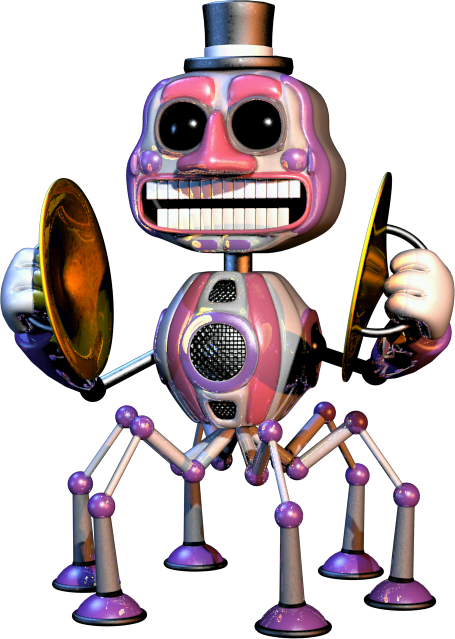
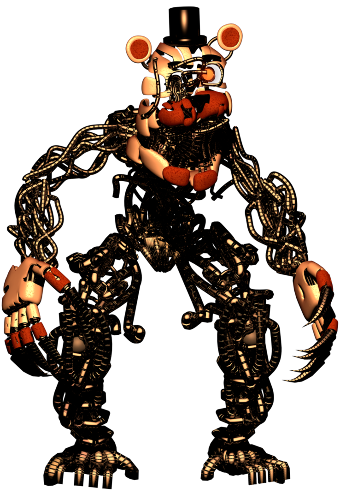
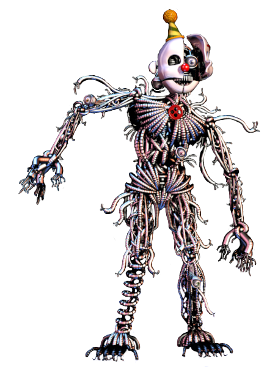
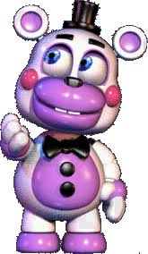
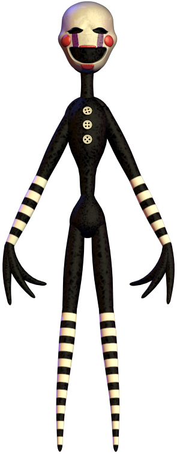

Music Man:

I chose Music Man because he's kinda creepy.
Music Man is kind off tough he comes if you make
noise he claps if he's commin to you. He claps faster
when he is closer to you.
Molten Freddy:

I chose Molten Freddy because he's weird but interesting i mean look at him.
Molten Freddy climbes very fast trough the vents you
can use the monitor
to keep track of him, when you hear him
laughing close the right.
Ennard:
I chose Ennard because he is a pretty inportant character in FNaF Sister Location.
Ennard climbs trough the vents. You can also keep track of
him on the
monitor, when you hear a squiking noise you need to close te vent.
Helpy:

I chose Helpy because he's so cute.
When you see Helpy just click on him and he'll go away if you
don't he will scare you with a airhorn he won't kill you.
Puppet/Marionette:

I chose him because it's my favorite character.
You can stop the Puppet by winding the Music Box up.
It sits in a box when it comes
out you can't get it back in and he will drain your recources a lot faster.